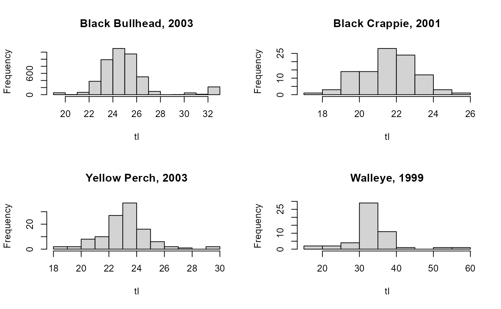

Lengths for Walleye, Yellow Perch, Black Crappie, and Black Bullheads from Lake Herman, SD.
Source:R/Herman.R
Herman.RdTotal lengths of Walleye (Sander vitreus), Yellow Perch (Perca flavescens), Black Crappie (Pomoxis nigromaculatus), and Black Bullheads (Ameiurus melas) for four years in Lake Herman, SD.
Format
A data frame of 5931 observations on the following 3 variables:
- tl
Total lengths (cm).
- spec
Species codes (
wae=walleye,yep=yellow perch,bkc=black crappie, andbbh=black bullhead).- yr
Capture years.
Source
From a South Dakota Fish and Game report. CSV file
Details
Lake Herman was sampled on June 20-22, 2005 with four overnight gillnet sets and 10 overnight trapnet sets. The trapnets were constructed with 19-mm (0.75 in) bar-mesh netting, 0.9 m high x 1.5 m wide (3 ft high x 5 ft wide) frames and 18.3 m (60 ft) long leads. The gillnets were 45.7 m long x 1.8 m deep (150 ft long x 6 ft deep) with one 7.6 m (25 ft) panel each of 13, 19, 25, 32, 38 and 51-mm (0.5, 0.75, 1, 1.25, 1.5, and 2 in) bar-mesh monofilament netting.
Examples
data(Herman)
str(Herman)
#> 'data.frame': 5931 obs. of 3 variables:
#> $ tl : num 16.6 19.2 20.1 21.1 27.7 27.5 28 29.7 30.3 31.4 ...
#> $ spec: Factor w/ 4 levels "bbh","bkc","wae",..: 3 3 3 3 3 3 3 3 3 3 ...
#> $ yr : int 1999 1999 1999 1999 1999 1999 1999 1999 1999 1999 ...
head(Herman)
#> tl spec yr
#> 1 16.6 wae 1999
#> 2 19.2 wae 1999
#> 3 20.1 wae 1999
#> 4 21.1 wae 1999
#> 5 27.7 wae 1999
#> 6 27.5 wae 1999
op <- par(mfrow=c(2,2),pch=19)
### Four (of 16 possible) examples
with(subset(Herman,spec=="bbh" & yr==2003),hist(tl,main="Black Bullhead, 2003"))
with(subset(Herman,spec=="bkc" & yr==2001),hist(tl,main="Black Crappie, 2001"))
with(subset(Herman,spec=="yep" & yr==2003),hist(tl,main="Yellow Perch, 2003"))
with(subset(Herman,spec=="wae" & yr==1999),hist(tl,main="Walleye, 1999"))

par(op)